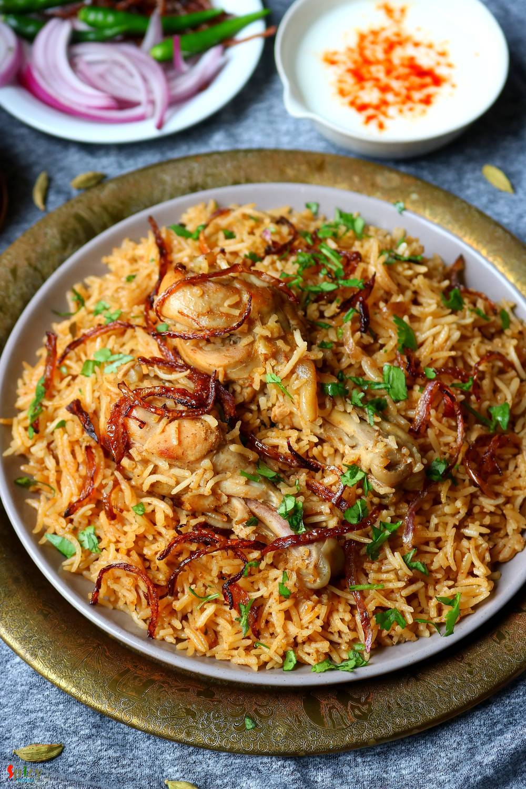

Simple and Easy Recipes
Chicken Pulao / Murg Pulao
© 2016 Spicy World, Published on: May 23, 2020
One of my favorite weekday meal is 'Chicken Pulao' aka Murg Pulao, because it is a one pot meal and takes very little time to cook. This wholesome dish is super tasty and goes best with raita or any type of curry. To make the pulao more healthy you can add add veggies like potatoes, carrots, beans etc. Along with that cashews and raisins can also be added. This is a very good lunch box option for adults and I can guarantee you that the box will return empty every time without a single complain. Try this in your kitchen and let me know how it turned out for you.

Ingredients
- 500 grams of chicken.
- 2 cups of long grain basmati rice.
- Whole spices (1 bay leaf, 2 green cardamom, 2 cloves, 1 small cinnamon stick).
- 2-3 Tablespoons of yogurt.
- Salt and sugar as per your taste.
- 3 Tablespoons of biriyani masala or garam masala powder.
- 1 Tablespoon of red chili powder.
- 1 cup of fried onion or beresta.
- 3 Tablespoons of oil.
- 1 Tablespoon of ghee.
- 1 Tablespoon of ginger garlic paste.
- Few drops of kewra or rose water.
- Some chopped coriander leaves.
- 5 cups of water.


Steps
In a kadai or pan add yogurt, ginger garlic paste, salt, little sugar, red chili powder, biriyani masala or garam masala powder, oil and all of the whole spices. Mix well.
Add the cleaned chicken pieces in that marinade. Rub well.
Cover the pan and keep aside for 3-4 hours. For best result keep it in the fridge for overnight.
Wash the basmati rice well in water, drain the dirty water.
Soak the washed rice in one cup of water for 3-4 hours.
Put the pan with chicken over the flame and start cooking on medium flame.
Add half of the fried onion or beresta. Cook until the chicken becomes 50% soft.
Again drain the water and add the basmati rice in the half cooked chicken.
Add lightly fried veggies and cashews, raisins at this stage if you want. Mix everything gently.
Add 4 cups of hot water and some more salt. The water should taste a bit more salty.
Mix and bring the flame to high.
When the water start boiling, cover the pan with a tight lid, bring the flame to low and cook for 20-25 minutes.
Open the lid, add the remaining beresta, kewra or rose water and ghee all over the pulao.
Turn off the flame, again cover the pan and leave the pulao as it is for 30 minutes.
The steam will evaporate from the rice and then you will get perfect fluffy pulao.
After 30 minutes, mix everything gently with a spatula and serve hot.
Your chicken pulao is ready to serve.
Serve this hot with salad and raita ..
")